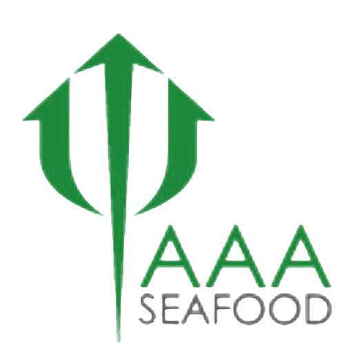
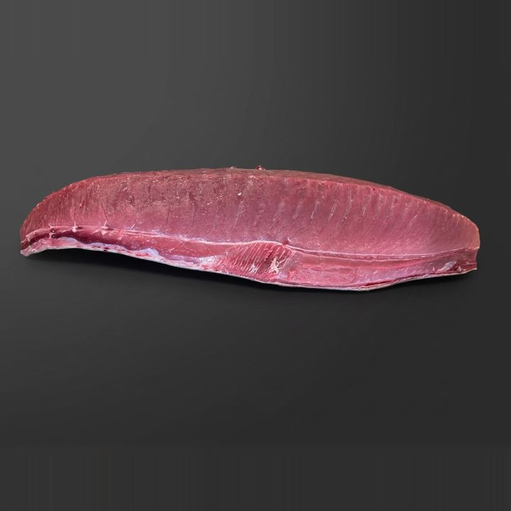

AAA INTERNATIONAL SEAFOODWHOLESALE SEAFOOD DISTRIBUTORWild-caught fresh Bigeye, sashimi-grade, for chefs, fine-dining restaurants, and sushi bars across Los Angeles and Southern California.

We carry fresh, wild-caught Bigeye Tuna: deep red, rich meat with more fat than Yellowfin, handled for raw service. Chefs use it for sashimi, nigiri, poke, and crudo. We supply whole loins.
Our fresh Bigeye is wild-caught, with the deep color and rich flavor sushi counters look for.
Loins delivered whole, ready for your kitchen to portion for sashimi, nigiri, and poke.
Every order is handled under HACCP-aligned, cold-chain protocols from the dock to your kitchen door.
Fresh supply changes week to week. Ask what’s in before you set the menu, and we’ll quote by product and quantity.
Yes. Our fresh Bigeye Tuna is wild-caught.
Yes. Everything we sell is sushi-grade, and our fresh Bigeye is ready for sashimi, nigiri, and crudo. What sushi-grade means
Bigeye usually has a richer, fattier meat and a deeper red color than Yellowfin, which is why many sushi chefs prefer it for sashimi and nigiri. Yellowfin is leaner and milder. See Yellowfin
By the whole loin, delivered ready for your kitchen to portion.
Routes run from Santa Barbara and Bakersfield down through Ventura, Santa Clarita, Los Angeles, Palmdale, Victorville, Orange County, the Inland Empire, the Coachella Valley, and San Diego County. See delivery areas
Buying in larger quantities? Pallet orders are available. Learn more
Pricing depends on the market and quantity, so we quote each order. Ask for a quote
Tell us what you need and how much, and our sales team will quote you.